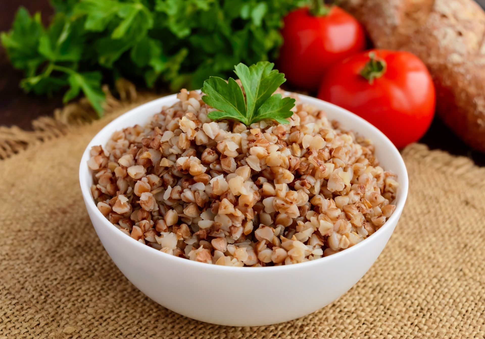

Главная страница
Таблица с информацией о продуктах

Специалисты американской кардиологической ассоциации считают, что как минимум половина злаков в рационе человека должна быть цельнозерновой. Такие продукты содержат питательные вещества, которые положительно влияют на здоровье сердца. Гречка — богатый источник рутина. Этот антиоксидант способен снизить риск сердечных заболеваний, предотвращая образование тромбов и уменьшая воспаление и кровяное давление. В результате исследований ученые выявили связь между диетами, в которых много цельнозерновых продуктов, и снижением риска развития сердечных заболеваний. А эксперименты на животных показали, что гречка нормализует кровяное давление. В зерне также много клетчатки — пищевые волокна снижают уровень холестерина в крови, что также уменьшает риск сердечных заболеваний, ожирения, диабета, инсульта.